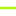
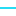

<!doctype html>
<html lang="en">
    <head>
        <meta charset="utf-8">
        <meta http-equiv="X-UA-Compatible" content="IE=edge">
        <meta name="viewport" content="initial-scale=1,user-scalable=no,maximum-scale=1,width=device-width">
        <meta name="mobile-web-app-capable" content="yes">
        <meta name="apple-mobile-web-app-capable" content="yes">
        <link rel="stylesheet" href="css/leaflet.css">
        <link rel="stylesheet" href="css/qgis2web.css"><link rel="stylesheet" href="css/fontawesome-all.min.css">
        <link rel="stylesheet" href="css/leaflet-measure.css">
        <style>
        html, body, #map {
            width: 100%;
            height: 100%;
            padding: 0;
            margin: 0;
        }
        </style>
        <title></title>
    </head>
    <body>
        <div id="map">
        </div>
        <script src="js/qgis2web_expressions.js"></script>
        <script src="js/leaflet.js"></script>
        <script src="js/leaflet.rotatedMarker.js"></script>
        <script src="js/leaflet.pattern.js"></script>
        <script src="js/leaflet-hash.js"></script>
        <script src="js/Autolinker.min.js"></script>
        <script src="js/rbush.min.js"></script>
        <script src="js/labelgun.min.js"></script>
        <script src="js/labels.js"></script>
        <script src="js/leaflet.wms.js"></script>
        <script src="js/leaflet-measure.js"></script>
        <script src="js/proj4.js"></script>
        <script src="js/proj4leaflet.js"></script>
        <script src="data/VariantaI_3.js"></script>
        <script src="data/VariantaII_4.js"></script>
        <script src="data/VariantaIII_5.js"></script>
        <script>
        var highlightLayer;
        function highlightFeature(e) {
            highlightLayer = e.target;
            highlightLayer.openPopup();
        }
        var crs = new L.Proj.CRS('EPSG:4026', '+proj=tmerc +lat_0=0 +lon_0=28.4 +k=0.99994 +x_0=200000 +y_0=-5000000 +ellps=GRS80 +towgs84=0,0,0,0,0,0,0 +units=m +no_defs', {
            resolutions: [2800, 1400, 700, 350, 175, 84, 42, 21, 11.2, 5.6, 2.8, 1.4, 0.7, 0.35, 0.14, 0.07],
        });
        var map = L.map('map', {
            crs: crs,
            continuousWorld: false,
            worldCopyJump: false, 
            zoomControl:true, maxZoom:28, minZoom:1
        }).fitBounds([[48.166755486385846,28.230517868890004],[48.24060438198344,28.406645434868626]]);
        var hash = new L.Hash(map);
        map.attributionControl.setPrefix('<a href="https://github.com/tomchadwin/qgis2web" target="_blank">qgis2web</a> &middot; <a href="https://leafletjs.com" title="A JS library for interactive maps">Leaflet</a> &middot; <a href="https://qgis.org">QGIS</a>');
        var autolinker = new Autolinker({truncate: {length: 30, location: 'smart'}});
        function removeEmptyRowsFromPopupContent(content, feature) {
         var tempDiv = document.createElement('div');
         tempDiv.innerHTML = content;
         var rows = tempDiv.querySelectorAll('tr');
         for (var i = 0; i < rows.length; i++) {
             var td = rows[i].querySelector('td.visible-with-data');
             var key = td ? td.id : '';
             if (td && td.classList.contains('visible-with-data') && feature.properties[key] == null) {
                 rows[i].parentNode.removeChild(rows[i]);
             }
         }
         return tempDiv.innerHTML;
        }
        document.querySelector(".leaflet-popup-pane").addEventListener("load", function(event) {
          var tagName = event.target.tagName,
            popup = map._popup;
          // Also check if flag is already set.
          if (tagName === "IMG" && popup && !popup._updated) {
            popup._updated = true; // Set flag to prevent looping.
            popup.update();
          }
        }, true);
        var measureControl = new L.Control.Measure({
            position: 'topleft',
            primaryLengthUnit: 'meters',
            secondaryLengthUnit: 'kilometers',
            primaryAreaUnit: 'sqmeters',
            secondaryAreaUnit: 'hectares'
        });
        measureControl.addTo(map);
        document.getElementsByClassName('leaflet-control-measure-toggle')[0]
        .innerHTML = '';
        document.getElementsByClassName('leaflet-control-measure-toggle')[0]
        .className += ' fas fa-ruler';
        var bounds_group = new L.featureGroup([]);
        function setBounds() {
        }
        map.createPane('pane_2016OrtofotoRM_0');
        map.getPane('pane_2016OrtofotoRM_0').style.zIndex = 400;
        var layer_2016OrtofotoRM_0 = L.WMS.layer("https://moldova-map.md/geoserver/orthophoto/wms", "orthophoto:Ortofoto_2016_RM", {
            pane: 'pane_2016OrtofotoRM_0',
            format: 'image/png',
            uppercase: true,
            transparent: true,
            continuousWorld : true,
            tiled: true,
            info_format: 'text/html',
            opacity: 1,
            identify: false,
            attribution: '',
        });
        map.addLayer(layer_2016OrtofotoRM_0);
        map.createPane('pane_63UAT1_1');
        map.getPane('pane_63UAT1_1').style.zIndex = 401;
        var layer_63UAT1_1 = L.WMS.layer("https://map.cadastru.md/geoserver/ows?version=1.3.0", "w_rsuat:mv_uat3", {
            pane: 'pane_63UAT1_1',
            format: 'image/png',
            uppercase: true,
            transparent: true,
            continuousWorld : true,
            tiled: true,
            info_format: 'text/html',
            opacity: 1,
            identify: false,
            attribution: '',
        });
        map.addLayer(layer_63UAT1_1);
        map.createPane('pane_22Terenuricadastrale_2');
        map.getPane('pane_22Terenuricadastrale_2').style.zIndex = 402;
        var layer_22Terenuricadastrale_2 = L.WMS.layer("https://map.cadastru.md/geoserver/ows?version=1.3.0", "w_cbi:cad_terenuri", {
            pane: 'pane_22Terenuricadastrale_2',
            format: 'image/png',
            uppercase: true,
            transparent: true,
            continuousWorld : true,
            tiled: true,
            info_format: 'text/html',
            opacity: 1,
            identify: false,
            attribution: '',
        });
        map.addLayer(layer_22Terenuricadastrale_2);
        function pop_VariantaI_3(feature, layer) {
            layer.on({
                mouseout: function(e) {
                    if (typeof layer.closePopup == 'function') {
                        layer.closePopup();
                    } else {
                        layer.eachLayer(function(feature){
                            feature.closePopup()
                        });
                    }
                },
                mouseover: highlightFeature,
            });
            var popupContent = '<table>\
                    <tr>\
                        <th scope="row">id</th>\
                        <td>' + (feature.properties['id'] !== null ? autolinker.link(feature.properties['id'].toLocaleString()) : '') + '</td>\
                    </tr>\
                </table>';
            layer.bindPopup(popupContent, {maxHeight: 400});
            var popup = layer.getPopup();
            var content = popup.getContent();
            var updatedContent = removeEmptyRowsFromPopupContent(content, feature);
            popup.setContent(updatedContent);
        }

        function style_VariantaI_3_0() {
            return {
                pane: 'pane_VariantaI_3',
                opacity: 1,
                color: 'rgba(255,0,0,1.0)',
                dashArray: '',
                lineCap: 'square',
                lineJoin: 'bevel',
                weight: 3.0,
                fillOpacity: 0,
                interactive: true,
            }
        }
        map.createPane('pane_VariantaI_3');
        map.getPane('pane_VariantaI_3').style.zIndex = 403;
        map.getPane('pane_VariantaI_3').style['mix-blend-mode'] = 'normal';
        var layer_VariantaI_3 = new L.geoJson(json_VariantaI_3, {
            attribution: '',
            interactive: true,
            dataVar: 'json_VariantaI_3',
            layerName: 'layer_VariantaI_3',
            pane: 'pane_VariantaI_3',
            onEachFeature: pop_VariantaI_3,
            style: style_VariantaI_3_0,
        });
        bounds_group.addLayer(layer_VariantaI_3);
        map.addLayer(layer_VariantaI_3);
        function pop_VariantaII_4(feature, layer) {
            layer.on({
                mouseout: function(e) {
                    if (typeof layer.closePopup == 'function') {
                        layer.closePopup();
                    } else {
                        layer.eachLayer(function(feature){
                            feature.closePopup()
                        });
                    }
                },
                mouseover: highlightFeature,
            });
            var popupContent = '<table>\
                    <tr>\
                        <th scope="row">id</th>\
                        <td>' + (feature.properties['id'] !== null ? autolinker.link(feature.properties['id'].toLocaleString()) : '') + '</td>\
                    </tr>\
                </table>';
            layer.bindPopup(popupContent, {maxHeight: 400});
            var popup = layer.getPopup();
            var content = popup.getContent();
            var updatedContent = removeEmptyRowsFromPopupContent(content, feature);
            popup.setContent(updatedContent);
        }

        function style_VariantaII_4_0() {
            return {
                pane: 'pane_VariantaII_4',
                opacity: 1,
                color: 'rgba(5,215,243,1.0)',
                dashArray: '',
                lineCap: 'square',
                lineJoin: 'bevel',
                weight: 2.0,
                fillOpacity: 0,
                interactive: true,
            }
        }
        map.createPane('pane_VariantaII_4');
        map.getPane('pane_VariantaII_4').style.zIndex = 404;
        map.getPane('pane_VariantaII_4').style['mix-blend-mode'] = 'normal';
        var layer_VariantaII_4 = new L.geoJson(json_VariantaII_4, {
            attribution: '',
            interactive: true,
            dataVar: 'json_VariantaII_4',
            layerName: 'layer_VariantaII_4',
            pane: 'pane_VariantaII_4',
            onEachFeature: pop_VariantaII_4,
            style: style_VariantaII_4_0,
        });
        bounds_group.addLayer(layer_VariantaII_4);
        map.addLayer(layer_VariantaII_4);
        function pop_VariantaIII_5(feature, layer) {
            layer.on({
                mouseout: function(e) {
                    if (typeof layer.closePopup == 'function') {
                        layer.closePopup();
                    } else {
                        layer.eachLayer(function(feature){
                            feature.closePopup()
                        });
                    }
                },
                mouseover: highlightFeature,
            });
            var popupContent = '<table>\
                    <tr>\
                        <th scope="row">id</th>\
                        <td>' + (feature.properties['id'] !== null ? autolinker.link(feature.properties['id'].toLocaleString()) : '') + '</td>\
                    </tr>\
                </table>';
            layer.bindPopup(popupContent, {maxHeight: 400});
            var popup = layer.getPopup();
            var content = popup.getContent();
            var updatedContent = removeEmptyRowsFromPopupContent(content, feature);
            popup.setContent(updatedContent);
        }

        function style_VariantaIII_5_0() {
            return {
                pane: 'pane_VariantaIII_5',
                opacity: 1,
                color: 'rgba(177,246,14,1.0)',
                dashArray: '',
                lineCap: 'square',
                lineJoin: 'bevel',
                weight: 3.0,
                fillOpacity: 0,
                interactive: true,
            }
        }
        map.createPane('pane_VariantaIII_5');
        map.getPane('pane_VariantaIII_5').style.zIndex = 405;
        map.getPane('pane_VariantaIII_5').style['mix-blend-mode'] = 'normal';
        var layer_VariantaIII_5 = new L.geoJson(json_VariantaIII_5, {
            attribution: '',
            interactive: true,
            dataVar: 'json_VariantaIII_5',
            layerName: 'layer_VariantaIII_5',
            pane: 'pane_VariantaIII_5',
            onEachFeature: pop_VariantaIII_5,
            style: style_VariantaIII_5_0,
        });
        bounds_group.addLayer(layer_VariantaIII_5);
        map.addLayer(layer_VariantaIII_5);
        var baseMaps = {};
        L.control.layers(baseMaps,{' Varianta III': layer_VariantaIII_5,' Varianta II': layer_VariantaII_4,' Varianta I': layer_VariantaI_3,"2.2. Terenuri cadastrale": layer_22Terenuricadastrale_2,"6.3. UAT 1": layer_63UAT1_1,"2016 Ortofoto RM": layer_2016OrtofotoRM_0,}).addTo(map);
        setBounds();
        </script>
    </body>
</html>
